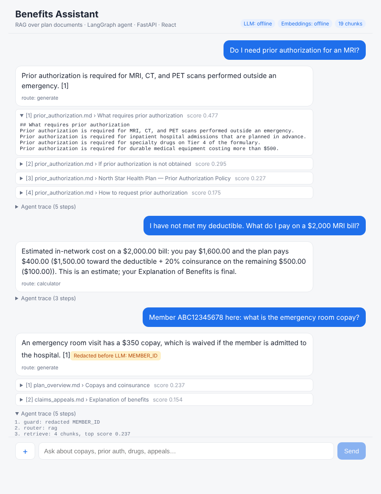

A health-plan chatbot that answers member questions from policy documents, with citations. It's built as a production-shaped reference: a LangGraph agent, a vector database, tool calling, PHI redaction, token streaming and an evaluation suite, with any LLM provider behind one interface.
Answers stream in token by token. Each answer shows its route, expandable source citations with relevance scores, and the agent's step-by-step trace. Personal identifiers are redacted before the model ever sees them.

The plan is fictional ("North Star Gold PPO"), but the problems are the real ones in regulated GenAI.
Policy docs are split by section, embedded and stored in Chroma. Answers come only from retrieved chunks and cite them as [1], [2].
A grading step drops weak matches. If nothing relevant remains, the model isn't asked to guess.
Cost questions route to a LangChain tool that applies the deductible, coinsurance and out-of-pocket cap exactly.
SSNs, member IDs, birth dates, phones and emails are masked before retrieval, the LLM and the audit log.
"Ignore previous instructions" style input is blocked, and retrieved text is treated as data, never as instructions.
OpenAI, Azure OpenAI, Anthropic or Bedrock behind LangChain's interfaces. An offline mode runs with no API keys.
A LangGraph state machine. Each step is a node you can test and trace on its own, and routing is explicit.
"Member ABC12345678 here: what is the emergency room copay?"
/chat/streamThe browser's EventSource only supports GET, so the client reads the fetch body stream and parses SSE frames itself.[MEMBER_ID] before it reaches the LLM, the vector store or the logs.RouteDecision via structured output; here it routes to RAG.A golden question set runs in CI on every push, so a change in chunking, prompts or models shows up as a number.
API, guardrail, tool, routing and streaming tests passing
Expected source document retrieved for every golden question
Answers containing the expected fact (offline mode)
Where each piece of a typical AI/ML full-stack job description lives in the code.
| Capability | Implementation | File |
|---|---|---|
| REST APIs / microservices in Python | FastAPI, Pydantic, SSE streaming, file upload | backend/app/main.py |
| LangChain | Documents, splitters, prompts, tools, model interfaces | vectorstore.py · providers.py |
| LangGraph | Typed state with reducers, conditional edges, tool node | backend/app/agent.py |
| OpenAI / Azure OpenAI / Anthropic / Bedrock | Provider factory selected by environment variable | backend/app/providers.py |
| RAG, vector DB, embeddings | Section-aware chunking, Chroma, idempotent re-ingest | backend/app/vectorstore.py |
| Guardrails / compliance | PHI redaction, injection screen, redacted audit log | backend/app/guardrails.py |
| React, TypeScript | Streaming chat, citations, trace, upload, abort | frontend/src/ |
| Testing & evaluation | pytest suite, golden-set eval, GitHub Actions CI | backend/tests · backend/eval |
| Deployment | Dockerfile, docker-compose with persisted index | Dockerfile · docker-compose.yml |
No API keys needed. Switch to a real provider in backend/.env.
# backend cd backend python -m venv .venv && source .venv/bin/activate pip install -r requirements.txt cp .env.example .env uvicorn app.main:app --reload # frontend (second terminal) cd frontend && npm install && npm run dev # open http://localhost:5173
With Spring AI, for teams whose services are Spring Boot.
String ask(String question) {
return chat.prompt()
.user(question)
.advisors(new QuestionAnswerAdvisor(store,
SearchRequest.builder()
.topK(4).similarityThreshold(0.5).build()))
.tools(new CostCalculatorTools())
.call()
.content();
}